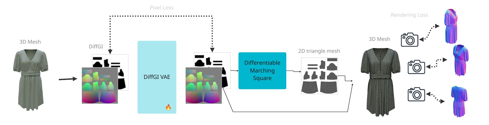
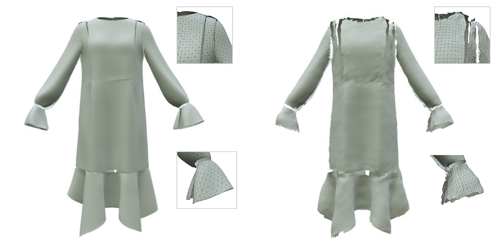
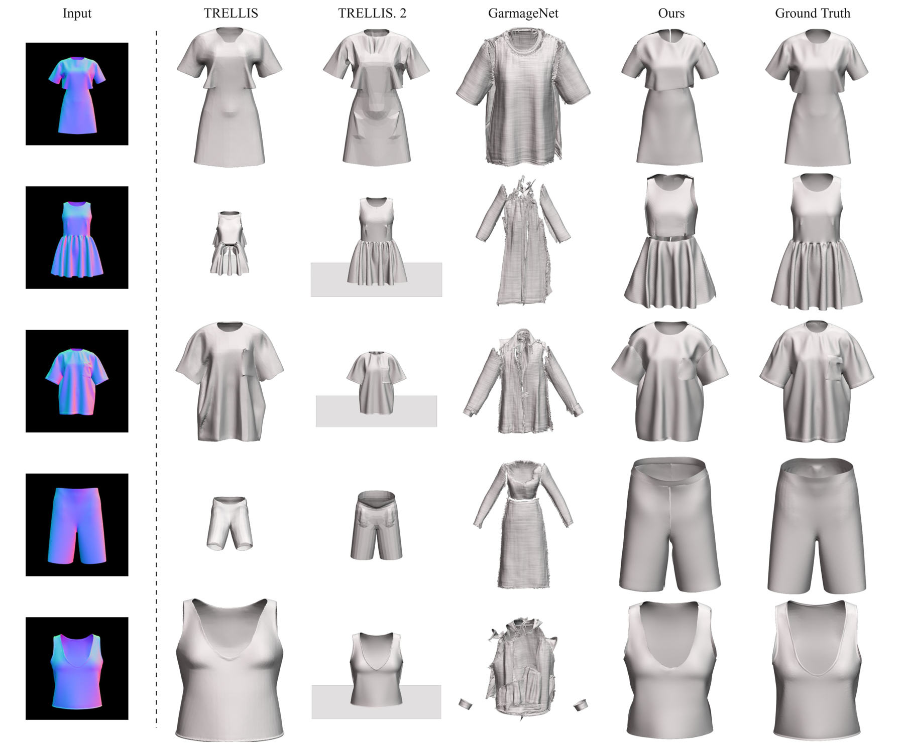
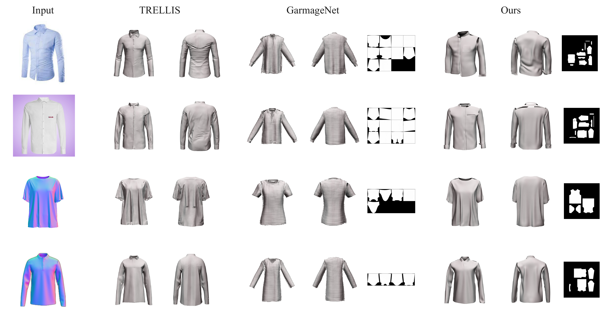
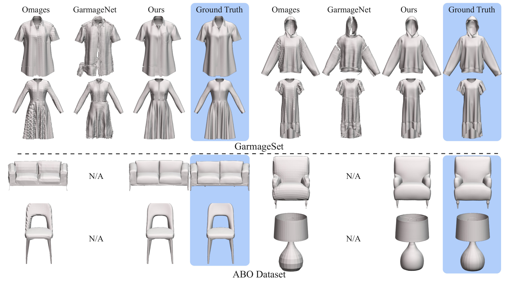
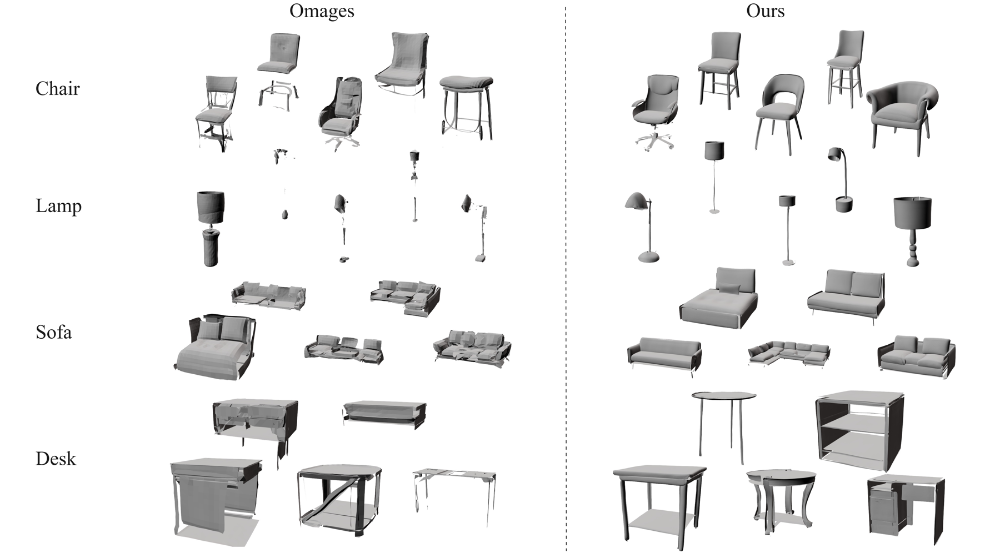
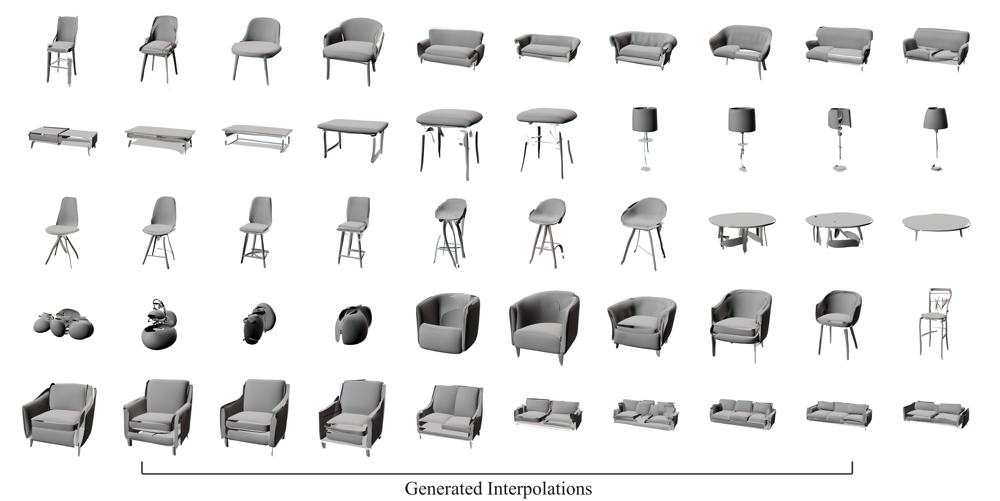

Generates open-boundary, single-layer surfaces such as garments — thin-shell geometries that watertight volumetric models fundamentally cannot represent.
A fully differentiable pipeline — continuous TSDF + Differentiable Marching Squares — backpropagates 3D surface losses to the latent, yielding subpixel-accurate boundaries with no staircase artifacts.
Diffusion over a compact 32×32 latent produces 3D in ~1.2 s on a consumer GPU (≈3 GB VRAM), scaling down to CPU-only edge devices.

An input 3D mesh is mapped to a 2D TSDF geometry image and compressed by the DiffGI-VAE into a compact 32×32 latent. The decoder reconstructs the TSDF map, and a Differentiable Marching Squares (DMS) module extracts the 3D surface from it. Because DMS is differentiable, pixel-space losses on the TSDF and position maps — together with a geometry-aware normal rendering loss — propagate end-to-end, from the rendered 3D surface all the way back to the 2D latent. A transformer-based latent diffusion model is then trained on this latent space for conditional generation.



| Method | Avg. Vertices | CD↓ | MD (F1)↑ | dH↓ | BCD↓ |
|---|---|---|---|---|---|
| TRELLIS | 109K | 3.44 | 0.28 | 15.38 | N/A |
| TRELLIS.2 | 380K | 11.01 | 0.27 | 69.70 | 12.44 |
| GarmageNet | 526K | 4.31 | 0.20 | 23.76 | 5.64 |
| Ours (DiffGI) | 23K | 1.35 | 0.48 | 8.42 | 2.91 |

| Method | Rep. Size | ABO CD↓ | ABO EMD↓ | ABO JSD↓ | ABO NC↑ | Garmage CD↓ | Garmage EMD↓ | Garmage JSD↓ | Garmage NC↑ |
|---|---|---|---|---|---|---|---|---|---|
| Omages | 64×64×4 | 0.89 | 0.25 | 0.92 | 0.89 | 1.31 | 0.17 | 1.79 | 0.95 |
| GarmageNet | N×72 | — | — | — | — | 2.19 | 0.21 | 32.61 | 0.94 |
| Ours | 32×32×4 | 0.83 | 0.23 | 0.89 | 0.83 | 0.46 | 0.16 | 1.24 | 0.96 |


| Method | Hardware | Peak VRAM (GB)↓ | Time (s)↓ |
|---|---|---|---|
| TRELLIS-image | RTX A6000 Ada | 16.28 | 4.52 |
| Omages | RTX A6000 Ada | 2.49 | 52.0 |
| Ours-Image | RTX A6000 Ada | 3.22 | 0.80 |
| Ours-Image | RTX 4070 (12GB) | 3.22 | 1.21 |
| Ours-Image | MacBook M4 (CPU) | — | 8.52 |
@inproceedings{shim2026diffgi,
title = {DiffGI: Differentiable Geometry Images for High-Fidelity Thin-Shell 3D Generation},
author = {Shim, Eungjune and Lee, Hansol and Ju, Eunjung},
booktitle = {Proceedings of the European Conference on Computer Vision (ECCV)},
year = {2026}
}